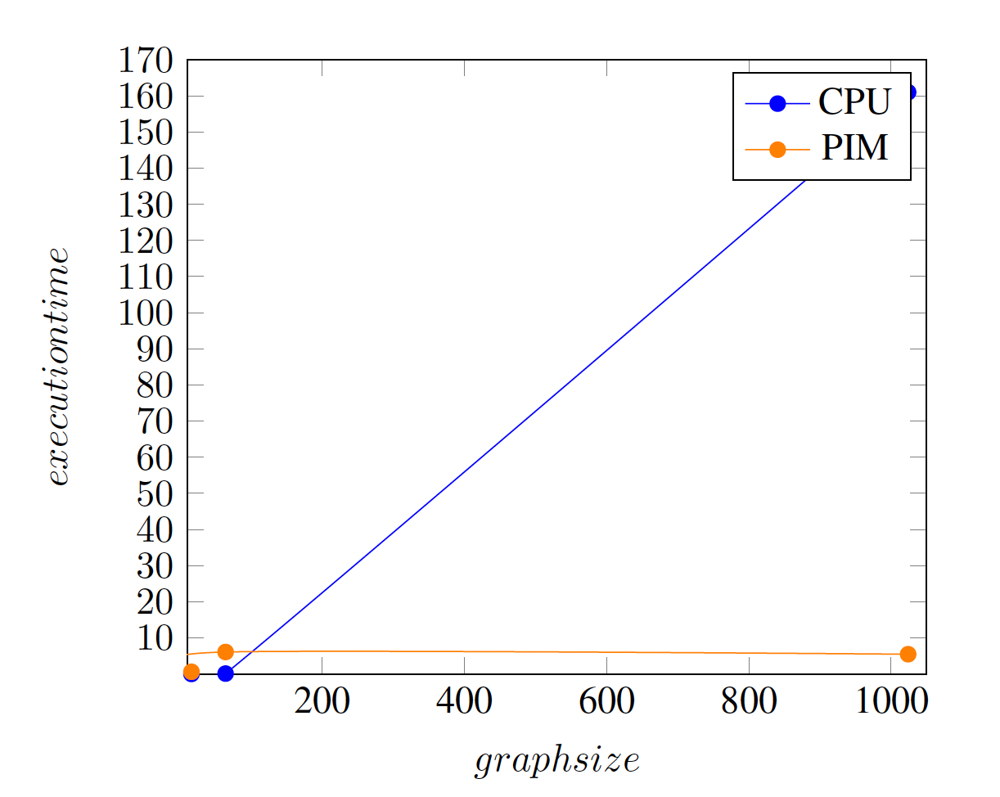

Summary
We implemented Dijkstra's algorithm in parallel on a GPU and a PIM system to compare their performance on graph workloads. This report discusses the implementations, experiments, and insights gained from comparing these two computing paradigms.
Background
Dijkstra algorithm is crucial for finding the shortest path in graphs, applicable in various domains such as networking and geographic information systems.
The PIM architecture, characterized by its integration of processing units near memory, promises reduced data movement and latency, potentially benefiting data-intensive applications like graph processing.
Algorithm Description
Dijkstra's algorithm works by iteratively updating the shortest paths to all vertices from a given source. The algorithm has wide application in the real-world, for instance the network routing protocols, which Dijkstra's algorithm is foundational for many types of network analysis. The pseudo-code below demonstrates the naive implementation for the Dijkstra algorithm.

The Dijkstra's algorithm take a graph topology that having the path cost between two vertexes, represented as a 2D array, and iteratively compute the shortest path length between the starting vertex and all other vertexes in the graph. The output is the shortest path length between all vertexes and the start vertex.
The key operations of the Dijkstra's algorithm include:
- Updating distance estimates for vertices adjacent to the current vertex.
- Selecting the next vertex with the shortest tentative distance.
The updating distance is computational heavy, since all the neighboring vertex of the current vertex has to update its shortest path, and therefore all the vertexes has to be access sequentially in randomly access pattern, which will be bottlenecked by the memory hierarchy in the CPU.
Also, finding the vertex with the shortest tentative distance require traversing all the vertex to compare their path, this performance has to be O(N) or the best performance O(lgN) if using priority queue.
The two operations are inherently sequentially and therefore, we keep the sequentially execution of the two step, while implementing each step using the special characteristic of GPU and PIM to improve the performance.
Implementation
- Languages/APIs: C++ with CUDA for GPU and C with API from the UPMEM SDK for PIM architecture.
- Hardware: Tests conducted on GHC/PSC clusters with GPUs and PIM tests on UPMEM platforms.
Results
The statistic we used for performance analysis is the execution time for the CPU, GPU and PIM, and the number of cycle that can be gathered from the CPU and PIM to analysis the benefit of near-data computing.
PIM result

As the table demonstrated, the DPU performance does not benefit by the near-data computing. Although the DPU is located near the DRAM and having the short interconnection between DPU and the DRAM, the less powerful DPU processing unit architecture compared to the highly optimized CPU result in the under-performance of the DPU. We expect less cycle needed for the DPU due to the easiness of DPU to access to the main memory, however, both execution time and the cycle of DPU show a large figure.
As the plot shows, the PIM execution time increase drastically with the graph size, which is due to the large number of memory access operation and arithmetic due to the large graph size, yet the simple processing unit architecture does not benefit from the any optimization such as out-of-order execution and memory level parallelism implemented in modern CPU. In addition, due to the limited stack space, the DPU is unable to execute our parallel version of Dijkstra's algorithm and thus result in the bad performance of the DPU.